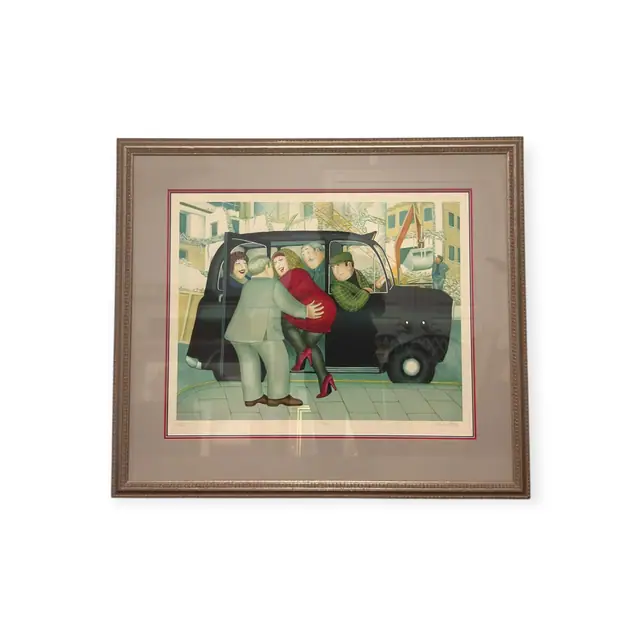
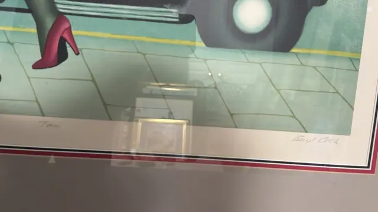
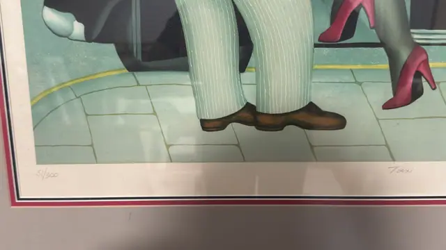

Paintings & Prints
Beryl Cook 'Taxi' Signed Limited Edition Print, Numbered Edition, Framed
Beryl Cook · late 20th century
Price Upon Request



About the Item
Beryl Cook. Beryl Cook's characteristic rotund figures crowd the picture: a woman in a scarlet dress, black tights and magenta stilettos is heaved into the open door of a black cab by a man in a pale green suit, while two grinning passengers already inside lean out to help. The street is a chalky mint green with pale paving slabs and a yellow kerb line, and a wintry townscape of shuttered buildings and a crane fills the background. The handling is smooth and flat with soft airbrushed modelling and strong dark outlines. Medium: colour lithograph on paper. Signed lower right margin, in pencil, reading "Beryl Cook". Edition: 51/300. Inscribed on the reverse or mount: Taxi; Beryl Cook; 51/300. Condition: No visible damage, foxing or cockling; some glass glare and a reflection of the room across the lower half.
About the Artist
Beryl Cook (1926-2008) was a self-taught English painter whose plump, joyful characters at pubs, parties and seaside outings made her a national favourite. Her signed prints were published in large, eagerly collected editions.
Details
- Creator:
- Beryl Cook
- Creation Year:
- late 20th century
- Dimensions:
- Height: 31.5 in (80.01 cm)
Width: 36.25 in (92.08 cm)
outside of frame - Medium:
- colour lithograph on paper
- Edition:
- 51/300
- Period:
- 20Th
- Condition:
- Offered in the condition shown in the photographs.
- Reference Number:
- VO-105
- Documentation:
- no certificate or label photographed; the back was not shown
- Gallery Location:
- Taxi; Beryl Cook; 51/300